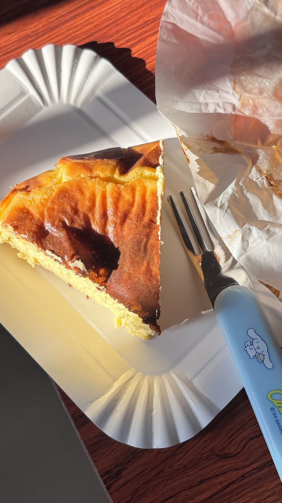
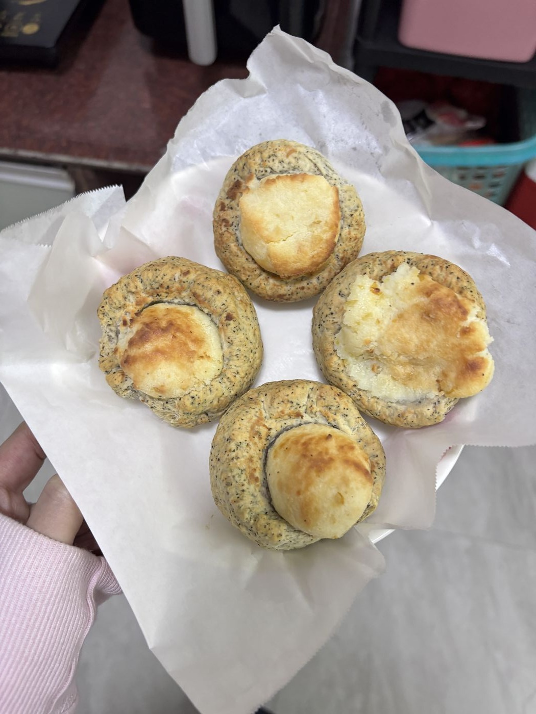

🧁 烘焙大赏
用烤箱的温度，温暖每一个日子
✨今日主厨推荐 · XSY's Bakery✨
🧈 烘焙是一种治愈，从称量材料到烤箱飘香，每一步都充满期待。
这里记录了我的烘焙作品，每一款都倾注了满满的心意，希望它们也能甜到你～
🎰 今天做什么甜点？摇一摇就知道！
🧀
🍰
🍪
🔥 招牌巴斯克 · 焦香双拼

🧀 🧀
🧀
经典款
原味巴斯克
🧀 奶油奶酪 350g🥛 淡奶油 200g🥚 鸡蛋 3个🍬 细砂糖 100g🌽 玉米淀粉 15g
外层焦黑是巴斯克的灵魂标志，内里细腻绵密入口即化，焦香与奶香交织，最简单的原料带来最极致的满足。
- 奶油奶酪软化加糖搅匀
- 分次加入鸡蛋搅拌均匀
- 加入淡奶油和玉米淀粉
- 过筛入模，220度烤35分钟
- 冷藏4小时以上口感最佳
抹茶巴斯克
🧀 奶油奶酪 350g🍵 抹茶粉 15g🥛 淡奶油 200g🥚 鸡蛋 3个🍬 细砂糖 100g🌽 玉米淀粉 15g
原味巴斯克的升级版，抹茶的清香平衡了芝士的浓郁，切开是治愈的抹茶绿，茶香和焦香在舌尖完美跳舞。
- 抹茶粉用少量热水化开
- 奶油奶酪软化加糖拌匀
- 加入蛋液、抹茶液、淡奶油
- 过筛入模，220度烤35分钟
- 冷藏过夜，撒上抹茶粉装饰
🍰 我的烘焙作品
🧀 芝士蛋糕
纽约芝士蛋糕
经典美式重芝士蛋糕，是芝士蛋糕中最浓郁扎实的存在。酸奶油与奶油奶酪的双重奏让奶香层层叠进，水浴法慢烤赋予了它云朵般入口即化的绵密质地。消化饼干底用黄油压实，每一口都是酥脆与绵密的完美碰撞。
🧈 奶油奶酪 500g🥛 酸奶油 200g🥚 鸡蛋 3个🍪 消化饼干 150g🧈 黄油 60g🍬 细砂糖 120g
💡 小贴士：所有材料必须室温，否则容易水油分离；水浴要用热水，烤盘水的高度要到模具的一半。
- 消化饼干碾碎加融化黄油压入模底压实
- 奶油奶酪室温软化加糖打至顺滑无颗粒
- 分次加入鸡蛋，每次搅匀后再加下一个
- 加入酸奶油和香草精拌匀
- 模具外包锡纸，水浴法160度烤60分钟
- 烤好不要取出，在烤箱中焖1小时
- 冷藏6小时以上，淋上酸奶油顶脱模
🍓 水果蛋糕
抹茶草莓布蕾蛋糕
抹茶戚风做底，轻盈如云带着微苦茶香；新鲜草莓切片铺满夹层，每一口都藏着酸甜汁水的惊喜。手工卡仕达酱温润绵密将层层蛋糕紧紧相拥，表面焦糖脆壳是点睛之笔——一勺下去，脆壳碎裂、戚风回弹、草莓爆汁、卡仕达融化，四种口感在舌尖层层递进，是春天最温柔的一块蛋糕。
🍵 抹茶粉 10g🍓 草莓 200g🥛 淡奶油 300g🥚 鸡蛋 4个🍬 细砂糖 100g🌾 低筋面粉 80g
- 制作抹茶戚风蛋糕胚
- 卡仕达酱加抹茶粉调味
- 草莓切片蛋糕分三层
- 层层叠加草莓和卡仕达酱
- 表面撒糖喷枪烧出焦糖壳
 🥚
🥚
⭐⭐
🥚 酥皮点心
蛋挞
酥脆的千层挞皮配上嫩滑的蛋奶馅，刚出炉蛋香四溢趁热最幸福。
🥚 鸡蛋 2个🥛 淡奶油 150g🍬 细砂糖 40g🧈 黄油 100g🌾 中筋面粉 150g
- 黄油包裹面团反复折叠擀开
- 蛋液加淡奶油和糖调成挞水
- 挞皮压入模具
- 倒入挞水八分满
- 200度烤20分钟至微焦

🍪⭐⭐
🍪 乳酪司康
伯爵红茶乳酪司康
伯爵红茶的佛手柑香气融入司康面团，夹着冰凉乳酪，外酥内软茶香四溢。
🌾 低筋面粉 200g🍵 伯爵茶碎 5g🧈 黄油 50g🧀 奶油奶酪 80g🥛 牛奶 60g🍬 细砂糖 30g
- 低粉加泡打粉糖和伯爵茶碎混合
- 加入冷黄油切拌成粗粒状
- 加入牛奶和蛋液揉成面团
- 包入乳酪馅整形成团
- 180度烤18分钟至金黄
🍪 乳酪司康
抹茶乳酪司康
抹茶与乳酪的经典搭配，微苦被乳酪的甜完美中和，绿白相间的切面颜值满分。
🌾 低筋面粉 200g🍵 抹茶粉 8g🧈 黄油 50g🧀 奶油奶酪 80g🥛 牛奶 60g🍬 细砂糖 30g
- 低粉加泡打粉糖和抹茶粉混合
- 加入冷黄油切拌成粗粒状
- 加入牛奶和蛋液揉成面团
- 包入乳酪馅整形成团
- 180度烤18分钟微上色即可